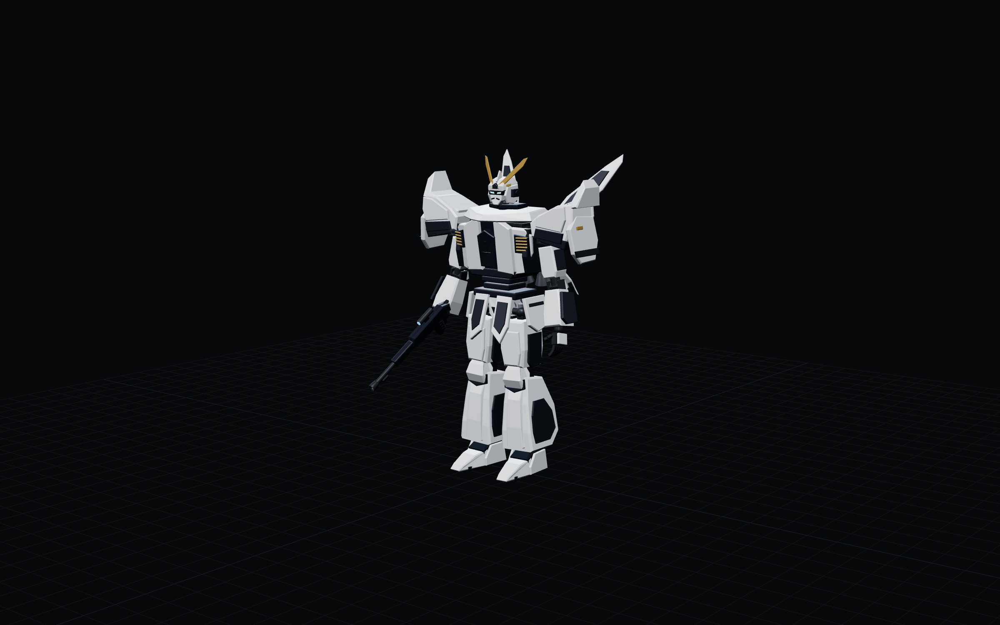
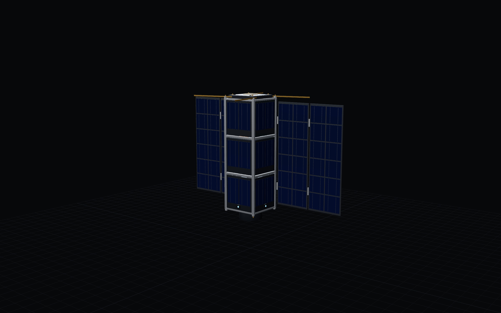
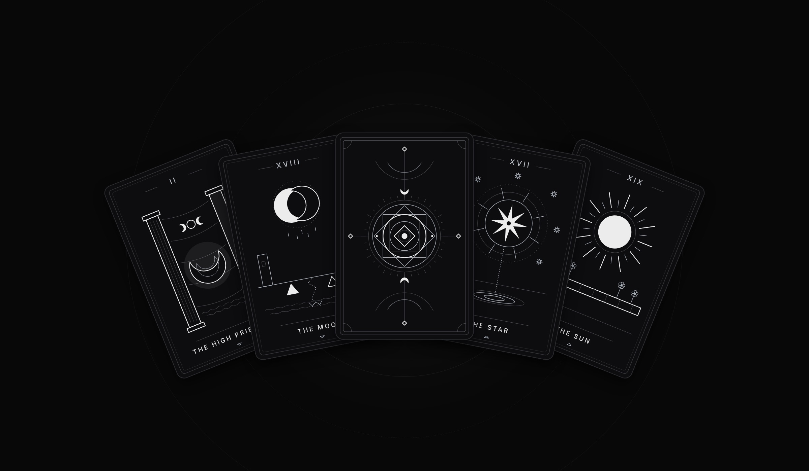

Lan Tran: projects
Tech

Tech · 01
Ξ Gundam
Interactive Hardware Explorer

Tech · 02
CubeSat
Satellite Systems Explorer

Arcana
Clarity through symbolism

Tech · 01
Interactive Hardware Explorer

Tech · 02
Satellite Systems Explorer

Clarity through symbolism